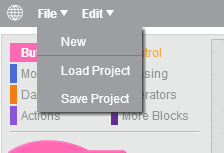

You will need a USB memory-stick. When you are satisfied with your program and wish to test it on the PedaGogo, simply press File and then Save Project, saving your project to the USB memory-stick.
Then all you need to do is put the memory-stick into the PedaGogo and press the red button on the robot. The red button is the restart button and it uploads the program saved to your memory-stick onto the robot. Then, when you click on the button you have chosen to start your program, the PedaGogo will start to follow the commands you have given it!
You can also load a project from the memory-stick, so you can pick up where you left off last time without having to redo your program!